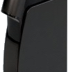
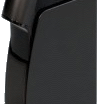

Light Touch projector makes any surface a touchscreen
 

A previously little-known company from the UK called Light Blue Optics has demoed a projector at CES which allows users to interact with the light image as if it were a touchscreen. The Light Touch throws a 10-inch image at WVGA resolution at incredibly short distances thanks to the holographic projection technology involved. At the same time the infra-red touch sensitive system allows users to interact with social networks, multimedia sharing and any other applications that can use the Wi-Fi or Bluetooth support in the device to connect to the Internet. It comes with 2GB of onboard flash memory, a microSD card slot for expanding the storage and the battery life will last 2 hours. Expect to hear more from this one on the OEM front as interest grows.
Via: businesswire.buz